打开 Cloud9 IDE
首先查看 kind 集群 postgres 数据
kubectl --context kind-kind exec -ti postgres-0 -- psql -U postgres
查询计数器
select * from importantdata;
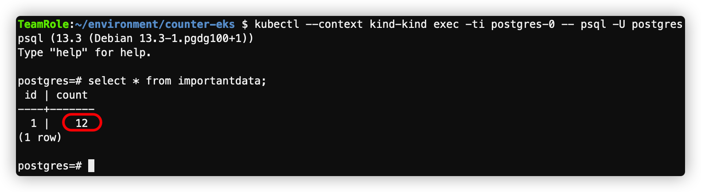
可以看到当前已经点击了 12 次
kubectl exec -ti postgres-0 -- psql -U postgres
查询计数器
select * from importantdata;
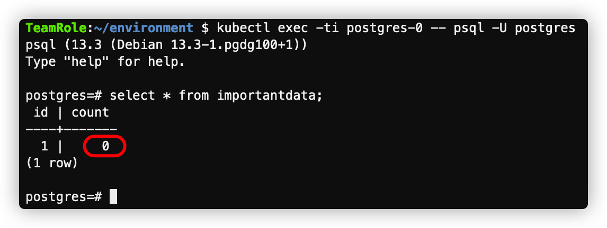
可以看到当前计数为 0
kubectl --context kind-kind get pv,pvc,sc
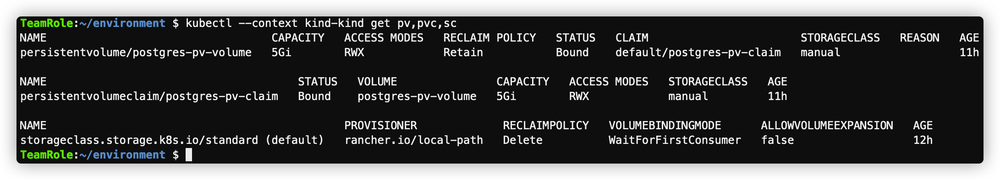
kubectl get pv,pvc,sc
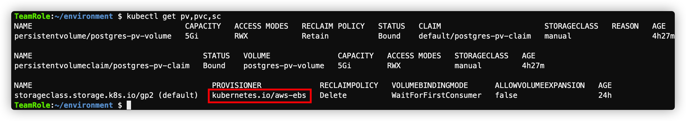
可以看到 velero 针对 aws 自动转换了 storageclass
kubectl describe sc gp2
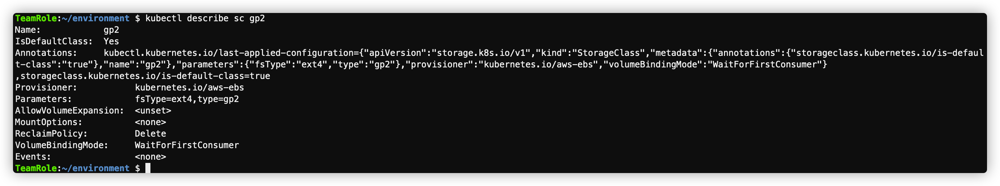
参考 https://github.com/kubernetes-sigs/aws-ebs-csi-driver
export EBS_CSI_POLICY_NAME="Amazon_EBS_CSI_Driver"
mkdir ${HOME}/environment/ebs_statefulset
cd ${HOME}/environment/ebs_statefulset
# download the IAM policy document
curl -sSL -o ebs-csi-policy.json https://raw.githubusercontent.com/kubernetes-sigs/aws-ebs-csi-driver/master/docs/example-iam-policy.json
# Create the IAM policy
aws iam create-policy \
--region ${AWS_REGION} \
--policy-name ${EBS_CSI_POLICY_NAME} \
--policy-document file://${HOME}/environment/ebs_statefulset/ebs-csi-policy.json
# export the policy ARN as a variable
export EBS_CSI_POLICY_ARN=$(aws --region ${AWS_REGION} iam list-policies --query 'Policies[?PolicyName==`'$EBS_CSI_POLICY_NAME'`].Arn' --output text)
eksctl 工具来关联身份提供商和创建SA# Create an IAM OIDC provider for your cluster
eksctl utils associate-iam-oidc-provider \
--region=$AWS_REGION \
--cluster=ekslab \
--approve
# Create a service account
eksctl create iamserviceaccount \
--cluster ekslab \
--name ebs-csi-controller-irsa \
--namespace kube-system \
--attach-policy-arn $EBS_CSI_POLICY_ARN \
--override-existing-serviceaccounts \
--approve
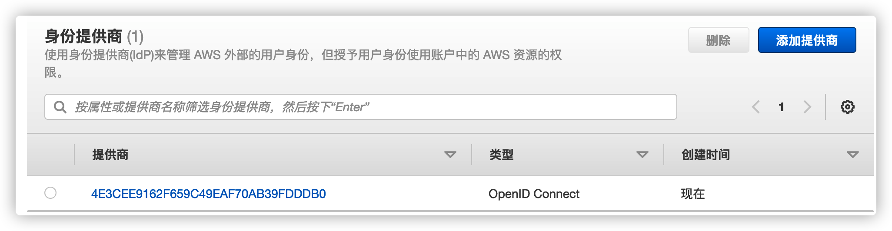
# add the aws-ebs-csi-driver as a helm repo
helm repo add aws-ebs-csi-driver https://kubernetes-sigs.github.io/aws-ebs-csi-driver
helm repo update
# search for the driver
helm search repo aws-ebs-csi-driver
当前最新driver版本为1.1.0，helm chart 版本为1.2.3 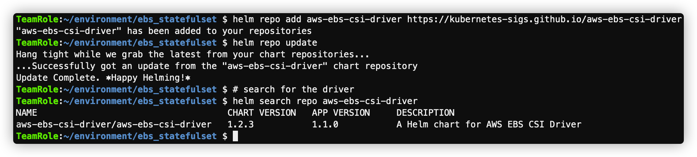
helm upgrade --install aws-ebs-csi-driver \
--version=1.2.3 \
--namespace kube-system \
--set serviceAccount.controller.create=false \
--set serviceAccount.snapshot.create=false \
--set enableVolumeScheduling=true \
--set enableVolumeResizing=true \
--set enableVolumeSnapshot=true \
--set serviceAccount.snapshot.name=ebs-csi-controller-irsa \
--set serviceAccount.controller.name=ebs-csi-controller-irsa \
--set Value.node.tolerateAllTaints=true \
aws-ebs-csi-driver/aws-ebs-csi-driver
helm ls -n kube-system
kubectl -n kube-system rollout status deployment ebs-csi-controller
kubectl get pod -n kube-system -l "app.kubernetes.io/name=aws-ebs-csi-driver,app.kubernetes.io/instance=aws-ebs-csi-driver"
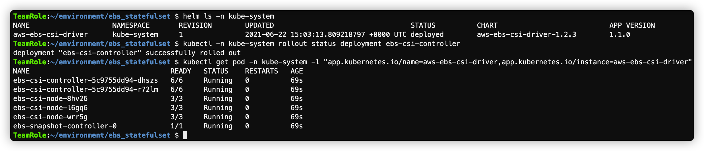
cat << EoF > ${HOME}/environment/ebs_statefulset/csi-storageclass.yaml
kind: StorageClass
apiVersion: storage.k8s.io/v1
metadata:
name: csi-gp2
provisioner: ebs.csi.aws.com # Amazon EBS CSI driver
parameters:
type: gp2
encrypted: 'true' # EBS volumes will always be encrypted by default
volumeBindingMode: WaitForFirstConsumer # EBS volumes are AZ specific
reclaimPolicy: Delete
mountOptions:
- debug
EoF
kubectl apply -f ${HOME}/environment/ebs_statefulset/csi-storageclass.yaml
kubectl patch storageclass csi-gp2 -p '{"metadata": {"annotations":{"storageclass.kubernetes.io/is-default-class":"true"}}}'
kubectl describe storageclass csi-gp2
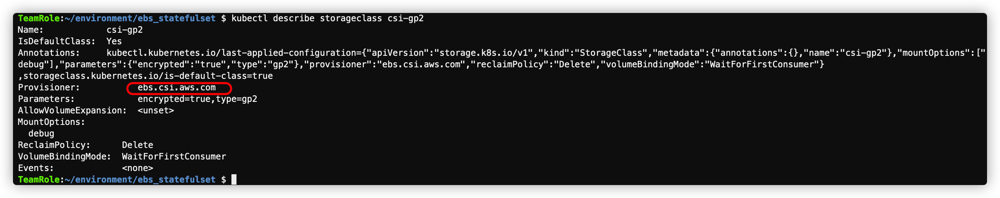
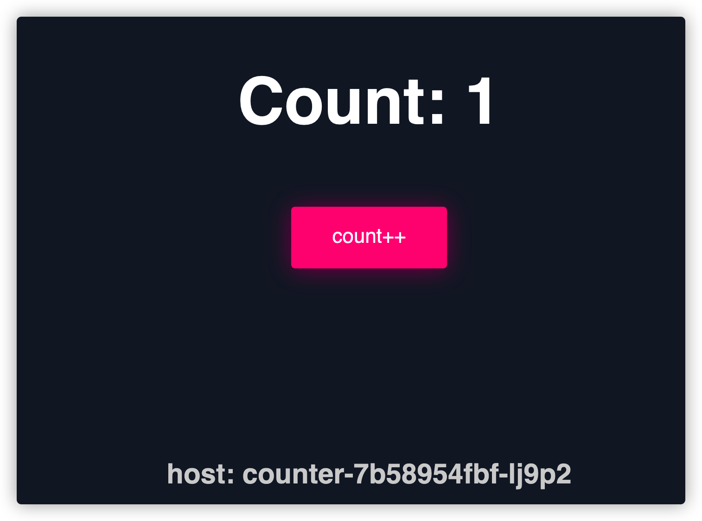
cd ${HOME}/environment/counter-eks
cat > postgres-pv-claim-new.yaml <<EOF
kind: PersistentVolumeClaim
apiVersion: v1
metadata:
name: postgres-pv-claim-new
labels:
app: postgres
spec:
storageClassName: csi-gp2
accessModes:
- ReadWriteOnce
resources:
requests:
storage: 5Gi
EOF
cat > postgres-statefulset-new.yaml <<EOF
apiVersion: apps/v1
kind: StatefulSet
metadata:
name: postgres
spec:
replicas: 1
serviceName: postgres
selector:
matchLabels:
app: postgres
template:
metadata:
labels:
app: postgres
spec:
terminationGracePeriodSeconds: 5
containers:
- name: postgres
image: postgres:13
imagePullPolicy: "IfNotPresent"
ports:
- containerPort: 5432
envFrom:
- configMapRef:
name: postgres-config
volumeMounts:
- mountPath: /var/lib/postgresql/data
name: postgredb
subPath: postgres
- mountPath: /docker-entrypoint-initdb.d
name: init
resources:
requests:
memory: "64Mi"
cpu: "250m"
limits:
memory: "128Mi"
cpu: "500m"
volumes:
- name: postgredb
persistentVolumeClaim:
claimName: postgres-pv-claim-new
- name: init
configMap:
name: postgres-config
items:
- key: init
path: init.sql
EOF
kubectl get statefulset postgres -o yaml > postgres-statefulset.yaml
执行删除
kubectl delete -f postgres-statefulset.yaml
kubectl apply -f postgres-pv-claim-new.yaml
kubectl apply -f postgres-statefulset-new.yaml
kubectl get po
确保都处于 running 状态 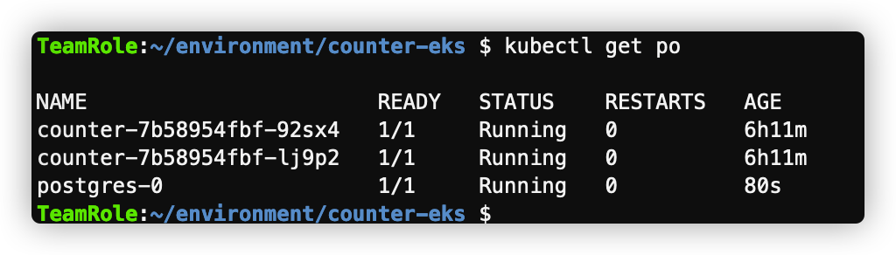
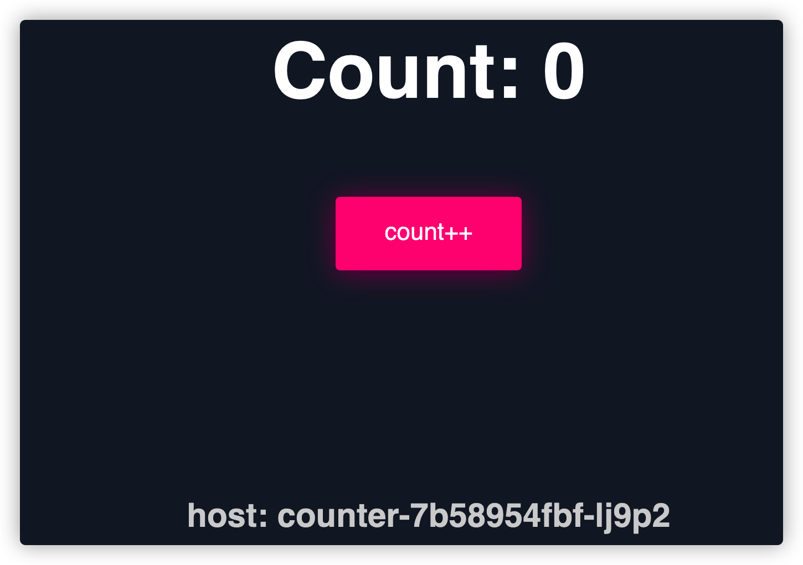
重置存储后，计数器复归为0